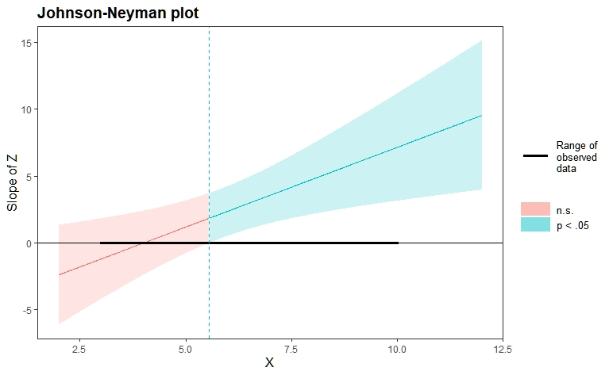
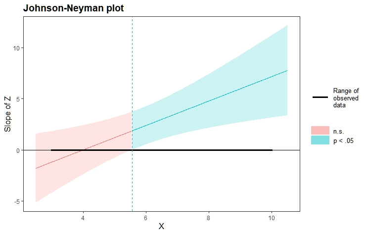
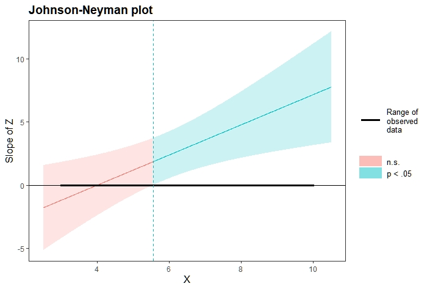

中介與調節效果分析 Mediation & Moderation
從交互作用到間接效果，理解效果如何傳遞、在什麼條件下改變。
DATA & REPRODUCIBILITY
資料字典與完整教材
| 檔案 | 網頁變數對照 | 用途 |
|---|---|---|
| ch16b.csv／40 筆 | x = 原 D；w = 原 X；y = 原 Y | 二元焦點變數的條件組間差與 J–N |
| ex16a.csv／350 筆 | x = X1；w = X2；y = Y | 連續 × 連續交互作用 |
| ex16b.csv／20 筆 | x = 原 Z；w = 原 X；y = 原 Y | 與原附圖相同方向的 J–N 分析 |
| ch16d.csv／25 筆 | x = X1；w = X2；y = Y | y = 30 − 5xw 的確定性示意，無有效的隨機誤差推論 |
| salary.csv／474 筆 | x = 原 X（教育／年）；m = 原 Z（起薪／萬元）；y = 原 Y（薪資／萬元）；w = 原 M（性別 0／1） | Ch17a.sav 的四個分析欄位；無缺失，未標準化或刪除離群值 |
原始檔案與處理紀錄
Ch16 的 CSV 欄名依實際檔案讀取。Ch16d.R 原寫 math、agg、att，但提供的 Ch16d.csv 欄位是 X1、X2、INT、Y；新版改依 CSV 設定，保留原檔於原始資料包。Ch16a.R 讀取 ex16a.csv，依原有對應處理。
Ch17.xlsx、Ch17a.sav、Ex17a.sav、Ex17b.sav 均保留於資料包；網頁的中介與條件歷程使用 Ch17a，不把 Ex17b 的未縮放薪資混入。原 Word 章節用於整理原理，未包含在公開下載包。
網頁數值以 Python、NumPy、SciPy 計算；拔靴 5,000 次，種子 20261123，所有方程式每次使用同一組重抽個案。原始資料及書籍內容權利屬原權利人。
對照作者提供的 Johnson–Neyman 原始圖
以下為提供的原始圖片，保留原圖標示；圖面本身未標記來源檔名與分析設定，不單憑檔名推定每張圖對應哪次分析。上方互動圖以目前所選資料重新計算。



